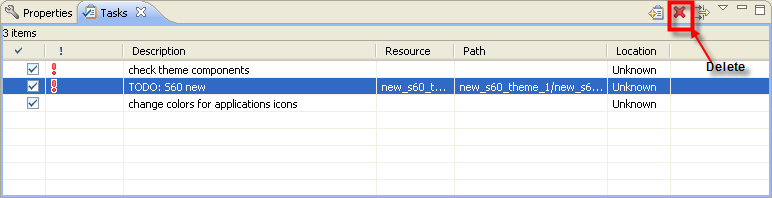

Deleting Completed Tasks
- Select a completed task in the Tasks
view.
- Select Delete button
from the tool bar of the Task View.
- The selected task with a mark in the completed checkbox are
deleted from
the list of tasks.
Note: You can also delete
individual
tasks in the Tasks view by right clicking on the task and then
selecting the Delete task option.

Figure: Deleting Completed
Tasks